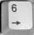
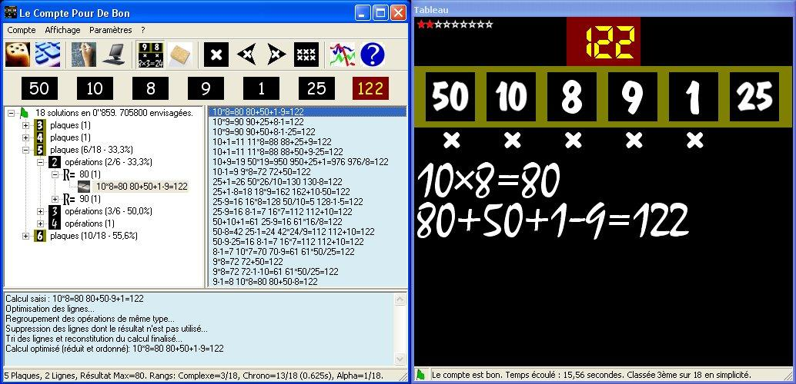
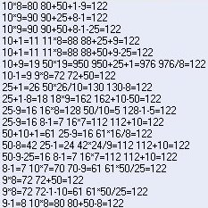
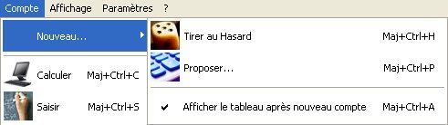

Le Compte Pour De Bon - Règle du jeu et utilisation
Sommaire
Remarque : N'hésitez pas à utiliser l'outil de recherche de votre navigateur, toute l'aide est dans cette unique page !
Présentation rapide
Le Compte Pour De Bon est un atelier pour le jeu Le Compte Est Bon du jeu télévisé culte Des Chiffres & des Lettres.
Le principe est simple : à l'aide de 6 plaques parmi 1, 2, 3, 4, 5, 6, 7, 8, 9, 10, 25, 50, 75 et 100 (les dix premiers en deux exemplaires et les quatre derniers en un seul exemplaire), il faut trouver un nombre compris entre 101 et 999 (appelé Compte).
Pour ce faire, il faut utiliser uniquement les 6 plaques et les opérations arithmétiques des nombres entiers naturels non nuls pour arriver à trouver le compte.
Par exemple, pour trouver 551 avec les plaques 1, 75, 25, 100, 6 et 4, on peut procéder comme ceci :
ou - par exemple - comme cela :
Cette version permet de saisir une opération avec plusieurs opérandes sur une même ligne pour le même type d'opération (comme dans le premier exemple, la ligne 450+100+1=551).
Lancement
Pour lancer Le Compte Pour De Bon, il suffit de cliquer deux fois sur le raccourci Le Compte Pour De Bon ou le programme lcpdb.exe :

Au lancement, une fenêtre apparaît :
De haut en bas, on trouve :
- le menu principal (où sont toutes les actions du programme),
- la barre d'outils comprenant les commandes principales (respectivement de gauche à droite) :
- le tirage au sort d'un compte à trouver,
- la proposition d'un compte à trouver (à saisir),
- l'entrée du calcul d'un compte à trouver (à saisir),
- la recherche et l'affichage de toutes les solutions distinctes d'un compte à trouver,
- l'affichage ou le masquage du tableau des calculs,
- l'effacement des résultats de recherche,
- l'affichage des solutions (4 boutons pour la solution la plus simple, la solution précédente, la solution suivante et la solution la plus complexe),
- les statistiques sur les solutions trouvées par l'humain et par la machine,
- la page d'aide (que vous êtes en train de lire).
- la zone d'affichage des solutions (de gauche à droite) :
- la vue arborescente des solutions triées par ordre croissant de complexité,
- la liste des solutions par ordre alphanumérique.
- la zone d'informations et la barre de statut.
Tirer au sort un compte à trouver
Pour choisir rapidement au hasard un compte à trouver, il suffit de cliquer sur le bouton ou la rubrique Compte | Nouveau... | Tirer au Hasard ou alors en utilisant le raccourci au clavier Maj+Ctrl+H.
Six plaques et un compte à trouver apparaissent alors au hasard et instantanément :
Le tableau s'affiche ensuite automatiquement pour permettre la saisie du calcul.
Proposer un compte à trouver
Pour proposer un compte à trouver donné, il suffit de cliquer sur le bouton ou la rubrique Compte | Nouveau... | Proposer... ou alors en utilisant le raccourci au clavier Maj+Ctrl+P.
Une fenêtre présentant un pavé numérique se présente à l'écran :
- Choisir d'abord les six plaques en cliquant successivement sur les boutons correspondant au choix.
- Choisir les trois chiffres du compte à trouver.
- Pour revenir en arrière, cliquer sur la flèche puis faire un autre choix.
- Une fois le choix complet, la fenêtre du pavé numérique disparaît et le compte à trouver est prêt à être cherché.
Une fois la proposition de compte saisie, le tableau s'affiche automatiquement pour permettre la saisie du calcul.
Chercher et saisir le calcul du compte à trouver
Pour chercher et entrer progressivement le calcul qui amène au compte, cliquer sur le bouton  ou la rubrique Compte | Saisir ou alors en utilisant le raccourci au clavier Maj+Ctrl+S.
ou la rubrique Compte | Saisir ou alors en utilisant le raccourci au clavier Maj+Ctrl+S.
Pour pouvoir chercher et entrer le calcul, il faut bien évidemment que six plaques et un compte soient définis (voir Tirer au sort un compte à trouver ou Proposer un compte à trouver).
Si c'est le cas, une fenêtre présentant un tableau noir avec les plaques et le compte à trouver apparaît :
Si un temps est limité pour la recherche et la saisie du calcul du compte (voir Paramètres Saisie du calcul), le nombre situé en haut à droite (60 dans l'exemple ci-dessus) est le temps qui reste à la saisie du calcul.
La saisie s'effectue entièrement au clavier. Le plus simple est d'utiliser le pavé numérique du clavier car toutes les touches nécessaires à la saisie du calcul s'y trouvent.
En effet :
- les quatre opérations arithmétiques sont situées en haut à droite (/, *, - et +),
- les 10 chiffres et,
- la touche Entrée qui permet de valider la fin de l'opération, la fin de la ligne et la fin du calcul.
Par exemple pour entrer le calcul suivant :
- Si l'option de saisie des résultats est activée (option par défaut : voir Paramètres Saisie du calcul), il faut appuyer successivement sur les touches suivantes :



- Si l'option de saisie des résultats est désactivée, les résultats sont calculés automatiquement et alors il faut appuyer successivement sur les touches suivantes :
D'une manière générale, trois cas peuvent se produire :
- Soit il n'y a plus de plaque, ni de résultat intermédiaire disponible alors la saisie de la dernière ligne après la touche Entrée terminera automatiquement la saisie du calcul (comme dans l'exemple ci-dessus).
- Soit il reste des plaques ou des résultats intermédiaires inutilisés mais le résultat d'une ligne est égal au compte à trouver, alors - de la même manière que précédemment - la touche Entrée terminera automatiquement la saisie du calcul.
- Dans tous les autres cas (il reste des plaques ou des résultats inutilisés et le résultat de la dernière ligne n'est pas égal au compte), pour terminer la saisie du calcul il faut appuyer deux fois sur la touche Entrée (une fois pour valider la dernière ligne et une fois pour le terminer le calcul).
Remarque : Au fur et à mesure de la saisie du calcul, les plaques utilisées sont cochées.
Erreurs de saisie
Si des erreurs de saisie surviennent, un message apparaît en bas du tableau. Exemple :
Lorsqu'un résultat intermédiaire doit être saisi (voir Paramètres Saisie du calcul), un message s'affiche en bas du tableau indiquant s'il est correct ou non :

Touches d'effacement
Si l'option Retour arrière autorisé est activée (option par défaut : voir Paramètres) :
- Pour changer le dernier nombre ou le dernier opérateur, appuyer sur la touche Retour Arrière (Flèche gauche située au dessus de la touche Entrée principale).
- Pour recommencer entièrement un calcul, appuyer sur la touche Echap (le tableau est entièrement effacé).
- Pour abandonner un calcul, appuyer sur la touche Echap lorsque le tableau est vide.
- Si le tableau n'est pas vide, il faut donc appuyer deux fois sur la touche Echap pour abandonner.
Après la fin de saisie du calcul
À la fin du calcul (ou lorsque la saisie a été abandonnée), la recherche des solutions est lancée et ces dernières sont affichées dans la fenêtre principale (voir Recherche des solutions).
Si le calcul (une fois réduit et ordonné) permet de trouver le compte ou le résultat le plus proche, le calcul est montré dans la liste et dans l'arborescence.
Recherche des solutions
Pour rechercher toutes les solutions distinctes, cliquer sur le bouton ou la rubrique Compte | Calculer ou alors en utilisant le raccourci au clavier Maj+Ctrl+C.
Si un calcul vient d'être saisi, abandonné ou que le temps imparti de la saisie est écoulé, la recherche des solutions est automatiquement lancée.
Voici ce qui s'affiche dans la fenêtre principale :

- Dans la partie gauche, les solutions sont classées par ordre croissant de complexité.
- Dans la partie droite, les solutions sont classées par ordre alphanumérique.
- Sur le tableau noir en haut à gauche, est indiqué le niveau de difficulté du compte à trouver, allant de très facile (0 étoile) à très difficile (8 étoiles) ou introuvable (9 étoiles). Pour le calcul du niveau, voir les statistiques.
Solutions sous forme de liste
Dans la partie droite, la liste présente les solutions par ordre alphanumérique.

Lorsque l'on clique deux fois sur une ligne, la solution est affichée dans la partie arborescente à gauche :
Des informations apparaissent dans la barre de statut concernant la solution mise en évidence :
Il s'agit des 3 critères de tri (correspondant aux noeuds de l'arbre), le rang dans l'arbre ainsi que les rangs dans les autres tris (Chronologique par temps de découverte et alphanumérique comme dans la liste).
Solutions sous forme arborescente
Dans la partie gauche, la racine de l'arbre donne le nombre de solutions trouvées et en combien de temps.
- Si le drapeau est vert, alors le compte a été trouvé (le compte est bon !).
- Si le drapeau est rouge, alors le compte a été approché.
Si l'on développe l'arborescence, on peut remarquer les critères de tris :
- Le premier critère de tri (premier niveau) est le nombre de plaques utilisées dans la solution (l'image du noeud est une plaque justement).
- Le deuxième critère de tri (deuxième niveau) est le nombre d'opérations effectuées dans le calcul de la solution (l'image du noeud est un nombre saisi sur le tableau).
- Le troisième critère de tri (troisième niveau) est le plus grand résultat intermédiaire du calcul de la solution sans compter le résultat final bien évidemment (l'image du noeud est R=).
- Le dernier niveau présente les solutions trouvées (l'image du noeud est une craie sur une éponge).
Pour chaque noeud, est indiqué entre parenthèses le nombre de lignes qu'il contient.
Lorsqu'il s'agit d'une fraction suivie d'un pourcentage, c'est le nombre de lignes sur le nombre total du noeud de niveau supérieur.
Le pourcentage est donc la proportion que représente ce noeud par rapport au noeud de niveau supérieur.
La fraction et le pourcentage ne sont pas indiqués lorsque le nombre de lignes est égal à 1 ou lorsque tous les noeuds ont le même nombre de lignes.
Il est possible d'effectuer plusieurs actions dans la vue arborescente.
Pour ce faire, il faut afficher le menu déroulant en appuyant sur le bouton droit de la souris lorsque le pointeur de la souris est sur la vue arborescente.
- Le premier groupe d'actions concerne la visibilité de la vue arborescente.
- Le deuxième groupe d'actions concerne le défilement des solutions par ordre croissant de complexité.
- Le troisième groupe d'actions concerne le défilement des solutions par ordre chronologique de découverte des solutions.
Les commandes du deuxième groupe correspondent à des boutons au niveau de la barre d'outils de la fenêtre principale :
- Pour afficher la solution la plus simple : ,
- Pour afficher la solution précédente, plus simple : ,
- Pour afficher la solution suivante, plus complexe : ,
- Pour afficher la solution la plus complexe : .
Pour effacer les solutions, il faut cliquer sur le bouton ou la rubrique Affichage | Effacer ou alors en utilisant le raccourci au clavier Maj+Ctrl+E.
Affichage des solutions dans le tableau
Si le tableau est affiché, la solution mise en évidence dans la liste ou dans la partie arborescente est affichée clairement dans le tableau noir.
Si celui-ci n'est pas visible, il faut cliquer sur le bouton pour le faire apparaître ou la rubrique Affichage | Tableau ou alors en utilisant le raccourci au clavier Maj+Ctrl+T.
Statistiques
Les statistiques sont mises à jour après chaque saisie de calcul.
Pour les afficher :
- Cliquer ici ou
- Cliquer sur le bouton ou
- Choisir la rubrique Afficher | Statistiques ou
- Utiliser le raccourci au clavier Maj+Ctrl+I.
Pour plus d'informations, consulter la légende en dessous du tableau des statistiques.
Paramètres
Note : L'état des rubriques de menu qui sont affichées dans les images correspondent aux paramètres par défaut.
Optimisations de recherche
Ces paramètres concernent la recherche des solutions.
Afin d'éviter de relever trop de solutions, certaines optimisations sont prises en compte :
Pas de multiplication/division par 1
Multiplier ou diviser par 1 ne change rien. C'est donc inutile.
Pas de résultat de même type d'opération que celle dont l'un des opérandes est un résultat
Faire deux opérations de même type dont l'un des opérandes de la deuxième est le résultat de la première opération revient à n'en faire qu'une seule.
Par exemple, faire 25+10=35 puis 35-7=28 revient à faire 25+10-7=28.
Une addition est de même type qu'une soustraction comme une multiplication est de même type qu'une division.
Pas de résultat égal à un des opérandes
Aucun opérande d'une ligne de calcul ne doit être égal au résultat de cette ligne.
Utiliser un nombre pour le générer à nouveau est inutile.
Par exemple : 100+50-75=75.
Pas d'opérandes opposés ou inverses dans une même opération
Au sein d'une opération, diviser un nombre par lui-même (avec plus de 3 opérandes) ou soustraire un nombre avec lui-même ne change rien.
Par contre ceci n'inclut pas une opération à deux opérandes consistant à diviser un nombre par lui-même pour obtenir 1.
Exemples : 1+10+50-10=51 ; 3*7*8/3=56.
Pas de résultat intermédiaire égal au compte
Si une ligne donne comme résultat le compte, toute ligne supplémentaire est inutile.
Exemple de calcul dans lequel le compte à trouver est 250 : 25x10=250 250-50-75-100=25 25x10=250.
Entrée d'une proposition
Ce paramètre, lorsqu'il est activé, permet d'empêcher de choisir plus de deux exemplaires de 1, 2, 3, 4, 5, 6, 7, 8, 9, 10 et plus d'un exemplaire de 25, 50, 75, 100 lors du choix des six plaques.
Saisie du calcul
Ces paramètres concernent la saisie du calcul dans le tableau.
Calculer automatiquement le résultat des opérations
Lorsque cette option est activée, le résultat d'une ligne de calcul est automatiquement calculé lorsque l'on appuie sur la touche Entrée.
Si l'option est activée et que l'on entre pour une ligne de calcul 7*5 puis Entrée, le tableau affiche 7x5=35.
Si l'option est désactivée et que l'on tape pour une ligne de calcul 7*5 puis Entrée, le tableau affiche 7x5=.
Il faut alors taper 35 puis Entrée pour terminer la ligne de calcul (le résultat doit être juste).
Retour arrière autorisé
Lorsque cette option est activée, il est possible d'effacer les derniers chiffres saisis.
Il suffit d'appuyer sur la touche Retour arrière (la flèche gauche au dessus de la touche Entrée) autant de fois qu'il y a de chiffres saisis.
Il est également possible de changer d'opérateur : il suffit d'en ressaisir un autre sans avoir à l'effacer.
Si l'option est désactivée, il ne faut pas se tromper sinon la seule possibilité est de tout effacer en appuyant sur la tocuhe Echap.
Appuyer deux fois sur la tocuhe Echap abandonne la saisie du calcul.
Temps de réflexion
Cette option permet de limiter ou non le temps de saisie du calcul.
Il est possible de choisir des durées de saisie de 30 ou 45 secondes ou d'1, 2 ou 3 minutes.
Pour ne pas limiter le temps de saisie, il faut choisir Illimité.
Arrêter la saisie à la fin du temps imparti
Cette option lorsqu'elle est activée, arrête la saisie du calcul en cours.
Si le dernier nombre saisi est un résultat valide (même non validé par la touche Entrée, il est pris en compte.
Si l'option n'est pas activée, le compte à rebours est affiché à titre indicatif.
Sortie des résultats
Ces paramètres permettent de spécifier la sortie des résultats de recherche.
Ecran > Type Liste (par ordre alphanumérique)
Il s'agit de la liste située dans la partie droite de la fenêtre principale.
Ce paramètre ne peut pas être désactivé.
Ecran > Type Arbre (par ordre de complexité)
Il s'agit de la vue arborescente située dans la partie gauche de la fenêtre principale.
Fichier > Type Enoncé
Lorsque cette option est cochée, un fichier est généré avec les solutions telles qu'elles apparaissent dans la liste à l'écran.
Le fichier est créé avec un nom du type plaque1-plaque2-...-plaque6,compte;E.txt.
Par exemple 2-5-10-25-50-100,250;E.txt.
Fichier > Type Profondeur
Lorsque cette option est cochée, un fichier est généré avec les solutions en notation de listes.
Par exemple, le calcul...
10+7=17
5-1=4
17*4*4=272
272+6=278
va être écrit...
(+ (* (+ 10 7) (+ 5 -1) 4) 6).
Le fichier est créé avec un nom du type plaque1-plaque2-...-plaque6,compte;P.txt.
Afficher les informations d'optimisation après saisie d'un calcul
Si cette option est cochée, les informations de réduction et d'ordonnancement du calcul saisi sont affichés en bas de la fenêtre principale.
Cette optimisation permet de retrouver le calcul dans les solutions trouvées dans le cas où le calcul saisi a le meilleur résultat évidemment.
Afficher le tableau après nouveau compte
Lorsque ce paramètre est activé, le tableau noir s'affiche automatiquement après avoir créé un compte à trouver soit en le saisissant, soit en le tirant au sort.
- Le paramètre activé est pratique pour les entraînements de saisies de calculs.
- Le paramètre désactivé est pratique lorsque l'on souhaite voir uniquement les résultats.
Ce paramètre est situé à deux endroits dans le menu, soit dans Compte | Nouveau, soit dans Paramètres.
Paramétrage en ligne de commande
Il est possible de spécifier les plaques et le compte en ligne de commande :
lcpdb.exe 10 7 5 1 4 6 278
Il est possible en ligne de commande de spécifier des plaques en dehors des limites autorisées dans le jeu traditionnel (en valeur comme en nombre d'exemplaires).
Les seules contraintes sont que les nombres doivent être des entiers strictement positifs et aucune des six plaques ne doit être égale au compte à trouver.
Paramétrage de la barre d'outils et des menus
Il est possible de paramétrer l'aspect des boutons et des menus en faisant apparaître ou non les icônes et les libellés associés aux commandes accessibles par boutons.
Si les paramètres sont activés...
- la barre d'outils donne cet aspect :
- le menu donne cet aspect :

Vocabulaire
Compte : But du calcul. Atteindre ou s'approcher le plus de lui à l'aide d'opérations sur les plaques et les résultats intermédiaires.
Ligne de calcul : Opération en une seule ligne. Par exemple 100+50-25=125.
Opérateur : Symbole des quatre opérations arithmétiques: +, -, * et /.
Opérande : Argument des opérations arithmétiques qui ne sont rien d'autres que les nombres (en l'occurrence, des plaques ou des résultats intermédiaires).
Plaque : Un des six nombres donnés au départ et avec lesquels on doit trouver le compte. Sa valeur ne peut être que 1, 2, 3, 4, 5, 6, 7, 8, 9, 10, 25, 50, 75 ou 100.
Résultat intermédiaire : Il s'agit du résultat d'une ligne de calcul. C'est-à-dire l'opération entre une ou plusieurs plaques et/ou un ou plusieurs autres résultats intermédiaires.
Version mobile du jeu
Une version tactile pour smartphone et tablette du Compte Pour De Bon existe. Il s'agit de Comptissibon.
Vous trouverez les informations nécessaires dans l'À propos.
- Pour accéder directement à l'App Store, cliquez ici.
- Pour accéder directement au Play store, cliquez ici.
- Pour accéder directement à Amazon.fr, cliquez ici.
Dernière mise à jour : le 25 août 2014 - patquoi.fr - Envoyer un mail.